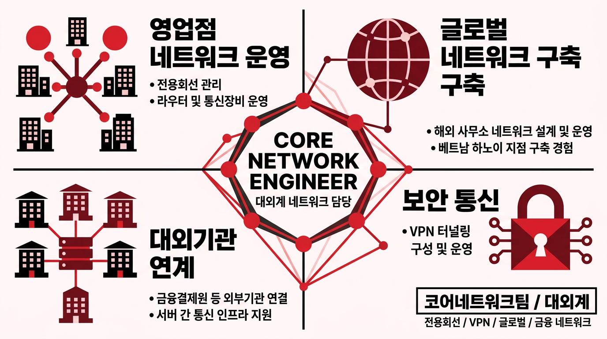
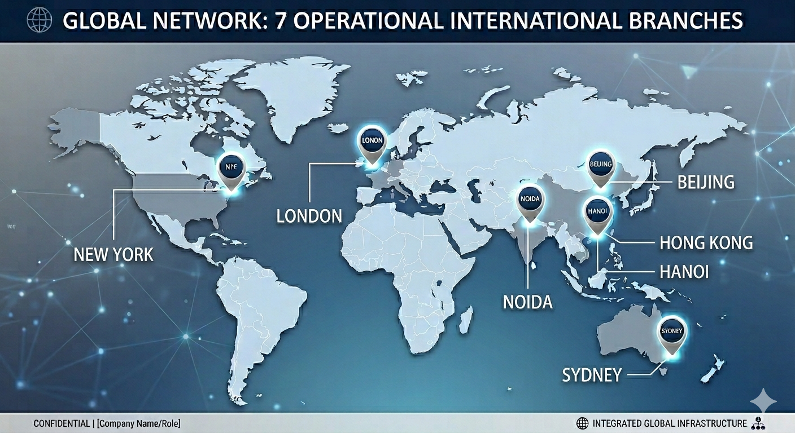
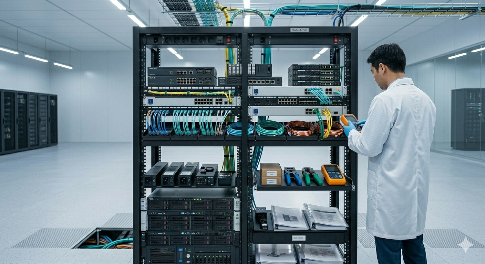
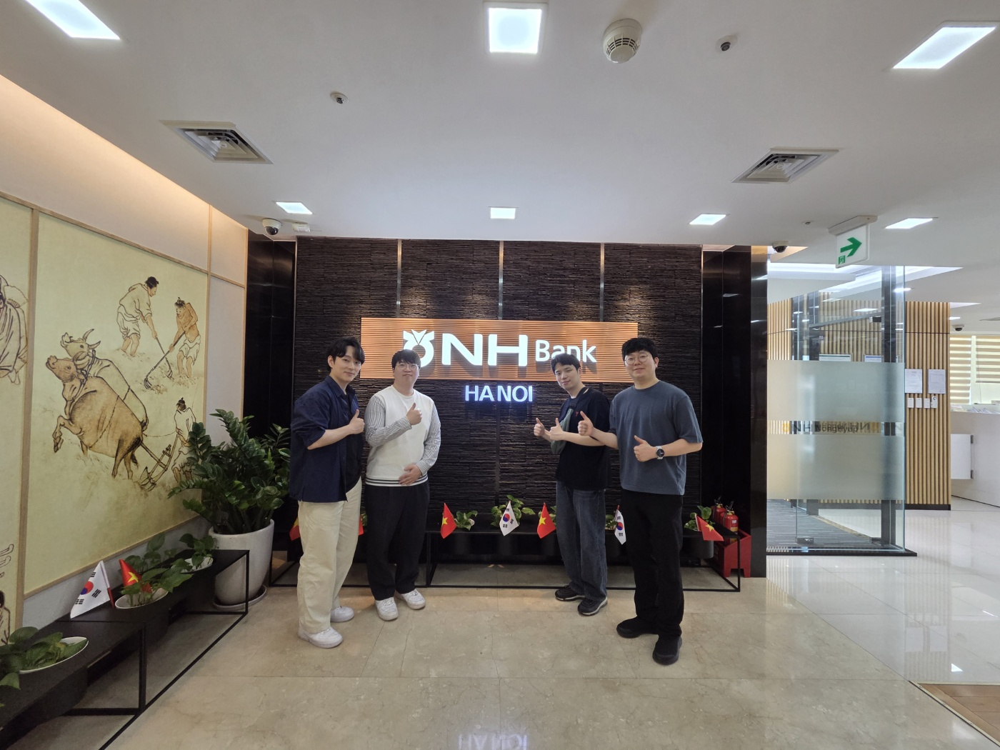
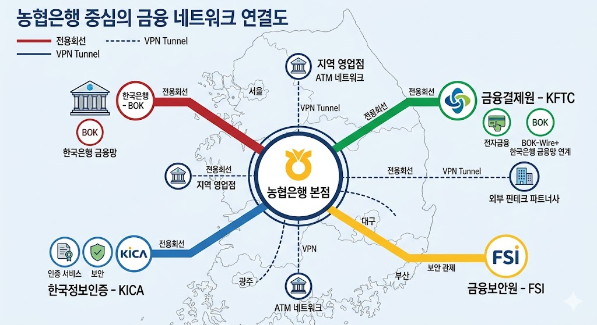

경력 기간
은행/농축협 영업점 관리
뉴욕지점 등 해외 사무소
금융결제원 등 기관 연계
전국 영업점/사무소 최적화 회선 구성
● 정상 운영중라우터/스위치 고가용성 통신 장비
● 24/7 모니터링의왕/안성 백본망 무중단 연결
● 연결 완료
※ NMS 시스템 운영을 통한 24시간 모니터링 수행
해외 지점 연결
글로벌 가용성

● 2024.03 구축 완료: 현지 통신 환경을 고려한 최적화된 네트워크 설계



"전국 · 글로벌 · 대외기관을 연결하는 금융 네트워크 허브 역할 수행"
전국망 안정성 및 품질 유지
해외 거점 구축 및 운영 지원
외부기관 연계 및 데이터 암호화
End-to-End 관리 체계